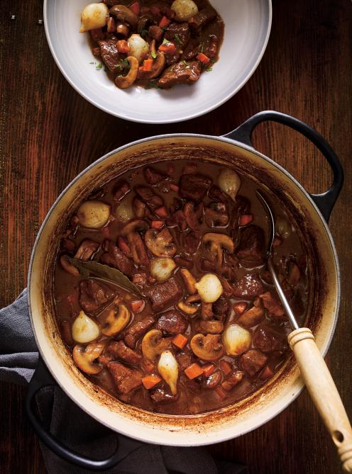

Beef Bourguignon

Description
Beef bourguignon or bœuf bourguignon, also called beef Burgundy, and bœuf
à la Bourguignonne, is a French beef stew braised in red wine, often red
Burgundy, and beef stock, typically flavored with carrots, onions, garlic,
and a bouquet garni, and garnished with pearl onions, mushrooms, and
bacon.
Ingredients
Beef
- 3 tbsp butter, softened
- 3 tbsp unbleached all-purpose flour
- 5 oz salted pork, rind removed and diced
- 2.5 lb chuck roast or boneless beef blade roast, cubed
- 2 tbsp olive oil
- 1 large onion, chopped
- 1 carrot, diced
- 2 garlic gloves, chopped
- 3 tbsp brandy
- 2 cups red wine
- 2 cups low-sodium beef broth
- 1 sprig fresh thyme
- 1 bay leaf
Toppings
- 1/2 lb white button mushrooms, halved
- 6 oz small pearl onions, blanched and peeled
- 3 tbsp butter
- 2 tbsp fresh parsley, finely chopped
Steps
Beef
-
With the rack in the middle position, preheat the oven to 325°F (165°C).
- In a small bowl, combine the butter and flour. Set aside.
-
In a small pot of boiling water, blanch the salted pork for 5 minutes to
remove some of the salt. Drain. Set aside on paper towel.
-
In a Dutch oven or large ovenproof pot over medium-high heat, brown half
the meat at a time in the oil. Set aside on a plate. Remove any excess
fat, leaving 1 tbsp (15 ml) of fat in the pot.
-
In the same Dutch oven or pot, brown the onion, carrot and salted pork
in the warm fat. Add the garlic and cook for 1 minute while stirring.
Add the brandy and reduce until almost dry. Add the wine and reduce by
half. Whisk in the broth and the butter-flour mixture, whisking
constantly. Bring to a boil. Add the meat, thyme and bay leaf. Cover and
bake for 1 hour.
Toppings
-
Meanwhile, in a large skillet over high heat, cook the mushrooms and
onions in the butter until nicely browned. Season with salt and pepper.
Add the mushrooms and onions to the meat. Cover and bake for another 30
minutes or until the beef is tender. Adjust the seasoning.
-
Serve the beef bourguignon with pappardelle pasta, potatoes or, for a
more traditional accompaniment, toasted and buttered homemade bread.
Garnish with parsley.